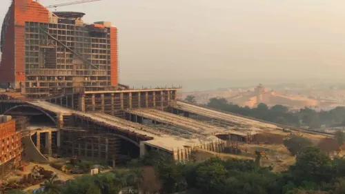
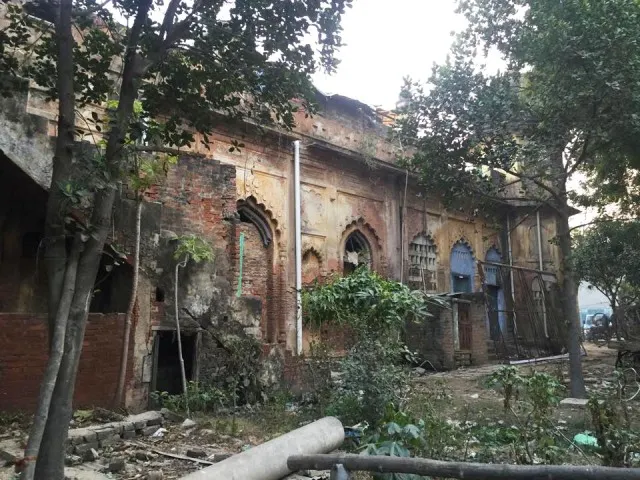
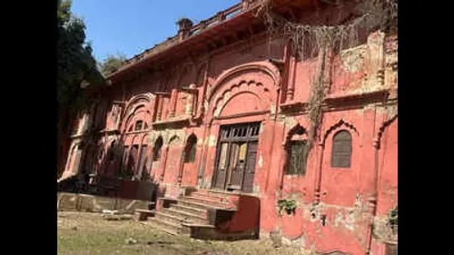
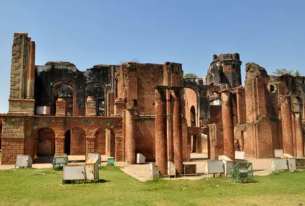
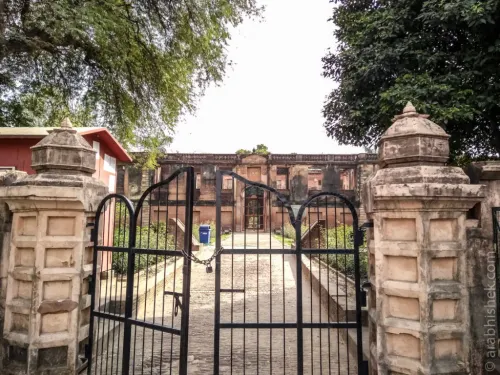

1/GOMTI NAGAR
Jayaprakash Narayn International Centre
UNFINISED SITE
A massive project that was supposed to become a major public centre in lucknow. Instead, parts remain UNFINISED , neglected interiors.
Its one of the projects which makes you wonder how something so huge could be remmain incomplete
FACT!
Reports have described unfinisehd rooms, damaged wiring and lifts not working

2/WAZIRGANJ
Rifa-e-Aam club
NEGLECTED HERITAGE
this was a old club building in Lucknow. The structure has been described in reports as
I believe this place gets less attention , No one talks about this place but its peak and because of its history , not every forgatten building needs a ghost attached to it :)
FACT!
the club is associated with Lucknow's civic and freedom movement history.

3/LUCKNOW UNIVERSITY
LAL BANDARI
RESTRICTED
An old pavilion within the lucknow uni campus. Its historic architecture gives it a different type of atmosphere from the other buildings around it
Reports have raised concerns about the structure condition and access restrictions. its permitted areas, not enter
FACT!
A baradari is a traditional pavilion associated with twelve doors or openings.

4/DILKUSHA
Dilkusha kothi
HISTORIC RUINS
A former country house that now stands in ruins . Its architecture looks very different from the usual nawabi monuments people associate with lucknow
The structure got damaged during events of 1857. The ruined walls , empty cold windows made it popular subject of eerie local stories . been there 4 times! go at around 4 or 5am , its peak
FACT!
The building was inspired by the english baroque county house architecture.

5/RESIDENCY
THE RESIDENCY RUINS
HISTORIC SITE
One of the most historically significant ruined complexes in lucknow.
My father tells me stories about this place, He belives that place is haunted so ya a good place to visit.
FACT!
The Residency was a major location during the 1857 seige of lucknow.
